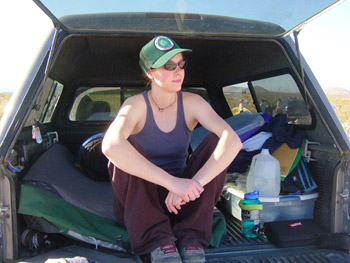

|
e-Grips Routesetting Interview: Jackie Hueftle 
eG: So, I’ve known you for a while now Jackie, but I’m not sure how you got started routesetting. How’d it all begin, why’d you get into it? How long have you been setting and climbing? JPH: I started climbing around Lake Tahoe just before I turned sixteen. A few months later I was invited to take part in a new setters clinic that Rocksport’s head setters (Ted Welser and Bill Kelly) were holding. Bill and Ted both hailed from the University of Miami in Ohio where Tim Steele, one of the only nationally certified setters from the ALF (American League of Forerunners), was head setter. ALF setters Mike Pont and Steve Schneider mentored Tim, and he mentored Ted and Bill, and they (mostly Bill, as Ted moved a few months later) mentored me, so I like to think my setting style has long roots. I spent six years setting at Rocksport with Bill as my head setter. He inspired me with his thorough understanding of movement. He taught me that hold selection, hold angle, and generous yet technical feet could create fluid yet challenging routes. He also told me stories about great setters of the past, hold companies and shapers, and the amazing feats performed by some of them (for example, the time at Rockquest when Tim Steele climbed his 5.12 slab route in bunny slippers). When I left Rocksport, I took with me some strong feelings about holds, a still-forming understanding of movement, and a great respect for the setters and shapers of the past. eG: You’ve been a part of some pretty big competitions, having volunteered a lot of your time over a couple years to learn more and work hard. What motivates you to be involved in these big events? What is most challenging about them? JPH: I was a JCCA competitor for three years, so I was never allowed to help set the yearly comp at Rocksport. When I finally aged out of the JCCA and got to help set the Nor-Cal regional I was really psyched. Then I started helping with ABS comps (regional and national) at the Spot, then the Sendfest comps (thanks Jamie and Chris!), then ABS Junior Nationals and SCS Junior Rope Nationals (thanks Kynan and Molly!), and then the Mammut Bouldering Championship (Jason!) that happened at the OR show this year. As for my motivation—I really enjoy being on the inside. It’s fun to spend a few days working really hard in an empty gym with a few friends, a bunch of clean holds, and blank walls that you are responsible for turning into something entertaining, amazing, and of just the right difficulty. You don’t eat right, you don’t sleep right, you forerun till you are exhausted, if it’s a rope comp you have mad harness-burn, and then, after all your hard work, when you can barely see for being so tired, you get to sit and watch all the competitors try their luck on your creation. The goal is to spread the climbers out, and, though sometimes you think you messed up as you watch climber after climber fail, it only takes one climber in one moment of grace to vindicate your efforts and make the whole thing worth it. The most challenging thing is probably setters block—when you want to do something cool and it’s just not working and then suddenly nothing is working and you lose confidence in your ability to do the job. That’s when having a good team of people to work with is key—everyone helps each other over and around the blocks and on to (hopefully) success. Also, getting hired is hard. The only reason I’ve gotten to do many of the comps I’ve done is because I’ve been persistent and people have helped me out. Even then, sometimes getting included in these comps feels like slogging through thick mud in oversized boots. eG: So you’ve traveled a lot, and probably climbed at many crags and climbing gyms as well – are there any gyms out there that inspire you to set, or climbing areas that you really love and you think about as models for movement? JPH: I definitely find outdoor climbing to be a great source of inspiration for setting. I’ve taken ideas away from every climbing area I’ve been to, from the technical vertical climbing at Smith Rocks to the overhanging tufas of Spain. One of my favorite areas to mimic is Maple Canyon in Utah, as its big, friendly cobbles are very reminiscent of gym holds and the routes there are so fun to climb. As far as gyms go, I find most blank walls to be inspiring, though some angles are better than others and of course hold selection plays a big part. The obvious answer for a specific gym is the Front, as it’s beautiful plywood walls seem to have endless possibilities. On the same note, my old gym (Rocksport) has clean angles on nice flat white Radwall, and I rarely lacked for inspiration there. Also, when stripped, the boulders at the Spot are very fun to set on because they are so big, their angles lend themselves well to comps, and they have such exciting top-out potential. eG: Do you have any setting mentors? From your experience, what do you think makes a good routesetter, whether for competition, or commercial routesetting. Is it style, intelligence, creativity, strength? JPH: By far the most influential person in my setting career has been Bill Kelly. He formed my setting style and, even more, my setting philosophy. Subsequently I’ve set with lots of people and I’ve learned something from each of them. People who I’ve found to be especially helpful recently: Kynan Waggoner, Molly Beard, and Chris Danielson. I think a good setter must have a good attitude, a well-informed sense of movement, a good aesthetic eye, and the desire to create routes or problems that are fun, exciting for spectators, safe, and as fair as they can be. Creativity is definitely important, but the setter must also be able to whip out some meat-and-potatoes routes. The setter should not be “too good” to set any grade, and should be able to set challenges for him or herself as well as for customers of all abilities. Most of all, a good setters should not be lazy. Setters should take the time to do their job right and to the best of their abilities. Bad routes are often the product of laziness more than anything, and putting in the extra effort by changing out a tweaky hold or adding a few feet can make a world of difference. eG: You’re one of few female routesetters in the country who’ve been doing it a long time, and the only female setter (besides Molly Beard), who has set for National level events. What’s it like being the only girl a lot of the time? Is it intimidating? A challenge? A motivating factor? JPH: I sort of like being the only girl, though when I do get to work with Molly its super awesome. I also like all the guys I’ve worked with and they’ve all been open-minded and treated me well and fairly. I am very motivated to carry my share of the weight at any event I work. I want to be recommended and hired because I do a good job. However, I’m not as strong of a climber as the guys I set with, so I’m not as useful forerunning their problems as they are forerunning mine. I have to make up for it in forerunning by watching others and by being able to visualize and understand movements I am unable to do under my own power. I think having lots of setting experience helps me do this because I understand what will work and what will not, even if I haven’t climbed every move. Still, sometimes I feel sheepish about being unable to do all the moves the guys can do. A big challenge for me is remembering that I have other things to offer that are just as useful as raw strength. eG: You’re also relatively tall compared to some of the top female climbers or youth climbers in general. How do you take that into account when routesetting? JPH: I’ve worked with Junior Teams off and on for as long as I’ve been climbing (as a climber, then as an occasional coach), and when setting for juniors I imagine my team kids climbing the problems. I don’t set to one specific kid, but rather imagine how the team as a whole would do. That usually allows me to pick out any reachy moves. Then I use trick number one for setting for youth climbers: I add extra (and equally good) feet. These feet should make the initial part of the move similar for the range of heights that will be on the problem. Along with the extra feet, I make sure the target hold isn’t too far away by measuring my kids’ reaches against my arm, then trying to touch that part of my arm to the hold. If it’s too far, I move it closer, change the launch hold, or add a bumping hold or some other option of similar difficulty. Pretty basic, but it works. Once I think I’ve got it figured out, I show it to Molly and she checks it out. Molly is pretty much the youth setting master guru, and if it isn’t going to work she can tell you in a second. She can also tell you if it is going to work, which is a nice thing to hear when you’ve spent two hours trying to make it that way. As for shorter women—they’re usually a lot stronger than me, and a lot stronger in general on their arms than taller women (except Alex Johnson), so you can usually account for them by adding a few feet and making sure nothing is too far away. I actually think shorter women tend to have it easier in comps because they’re good on high (scrunchy for me) feet and better at campusing. I think it has something to do with leverage. I like setting for women in general because I can put feet super high and know they’ll be able to get a foot up and rock onto it. Most women will do technical static moves more readily than guys will, and it’s enjoyable to set to that. eG: You’ve gathered a wealth of knowledge of climbing holds having set with so many at different gyms and comps – what can you say about e-Grips as a hold brand? Any favorite sets? If so, what stands out about them? JPH: Before I moved to Boulder I had never set with e-Grips. The Radwall at Rocksport is perfectly flat, so we never needed to buy urethane holds. When I started setting at the Spot I began using mostly e-Grips, and they quickly became my favorite hold company. There are several reasons for this. Firstly, the walls at the Spot are far from flat, so e-Grips flexible-yet-strong urethane is a necessity. Secondly, e-Grips texture, which may seem slimy fresh out of the box, quickly evens out to a skin-friendly, not-too-slippery, not-too-aggressive, amazingly good at chalk-holding surface that seems to maintain its gentle stickiness through multiple washings and years of use. Thirdly, and largely due to the artistic genius of Ian Powell and Ty Foose, their shapes are original and some of the best in the industry. Their crimps are unmatched, their 2tex is great, and their slopers, pinches, jugs, kids holds, and features are pleasing to look at, friendly to hold, and fun to set with. Also, their directional feet are actually directional—not as common as it should be in the industry. Don’t get me wrong, other companies have some great stuff going on as well, but right now I’m definitely a huge e-Grips fan. As for favorite sets—I really like Ian Powell’s crimp sets, the Wonder Hole feature, and Ty’s bubble-wrap pinches and giant bubble-wrap feature. I’m pretty psyched on the mini-water tufas right now too. Oh, and the new 2tex crimps are sick! eG: From your experience, what would you tell young new setters about how to learn more and gain experience themselves? JPH: In Your Gym: set as much as you can, as the more you practice the easier it gets. After you set make sure you forerun. If things don’t feel the way you want try to tweak them until they do. Then watch other people climb your stuff—with your mouth closed. You can’t get a good idea of how people will climb your route if you feed them beta the whole time they’re on it. If they’re not doing what you want, tweak it so they are. On this note, if you spend a long time trying to force something and its just not working it might be time to put down your wrench, take a deep breath, and get over it. Then take it down and try something else. Setting is a balance of art and product, but it’s important not to get so caught up in trying to force some vision you have that you forget your first responsibility, which is to create something that is workable, safe, and fun. At Other Gyms/Big Events: to set at someone else’s gym or for bigger events you need to be able to work with a group and possibly under a head setter. We all have our own ideas about setting, but to make big comps go off those ideas must sometimes be compromised and mutual respect must exist. If you come in with a big ego you’re going to hurt the team more than help it. Try to see everyone’s perspective instead of stubbornly sticking to your guns. After all, it’s just a route, right? The “F this: Factor: setting sharp footsie-crimps your body length apart does not qualify as a fun hard route. If you’re having trouble understanding why, imagine some graceful yet short climber (Emily Harrington, for example) trying to climb what you’ve just set. She’s very strong, but can she do the moves? If she can, is she having fun? Do you really want to set something that makes her that unhappy? I didn’t think so. Final Notes: Every route doesn’t have to be for every person, but there are better ways to set difficulty than to put uncomfortable holds really far apart. If you can’t figure any out, try road tripping to other gyms and see what their setters do. Still having problems? Compete in some big comps (or volunteer to help set them), take a USAC clinic, or check www.routesetter.com for advice. Kung-fu movies have also been known to increase setter’s motivation, discipline, and understanding of the beauty of movement. Plus they’re awesome. |